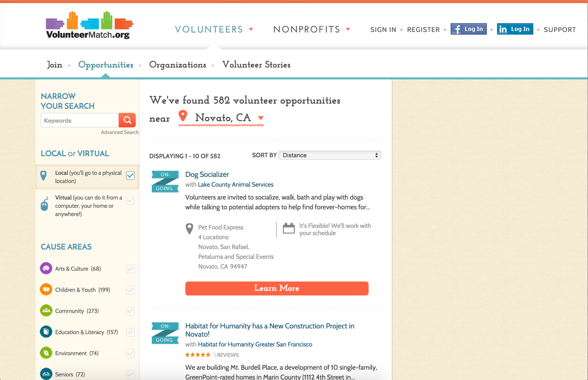
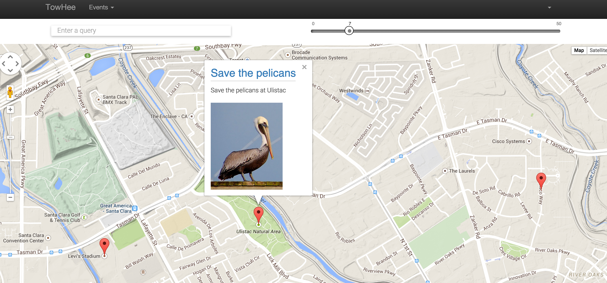
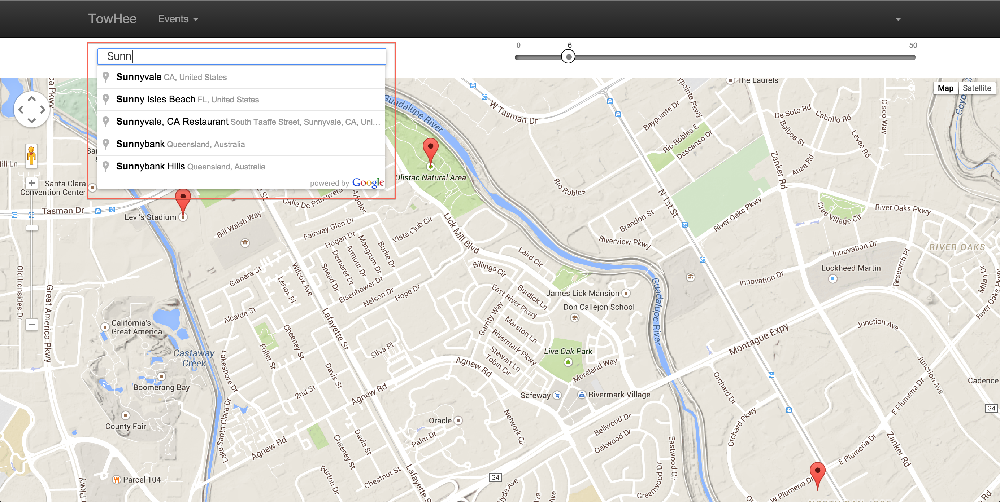

TowHee - Find awesome volunteering events nearby!
A NodeNight release
By
Sherry Zhou
<xiao.qiao.zhou@gmail.com>
Suprita Shankar
<suprita.shankar@gmail.com>
http://github.com/supritashankar/Towhee
Background
TowHee - Volunteering events near by!
Built on MEAN stack
Features
- MongoDB geospatial query
- Geolocation
- Google API's
MongoDB
Slides are just HTML elements with a class of slide.
db.events.createIndex({ location : "2dsphere" });
db.events.find({
location: {
$near: {
$geometry: {
type: "Point",
coordinates: [
-121.88,
37.38
]
},
$maxDistance: 5000
}
}
})
Geolocation
//modules/maps/controllers/maps.client.controller.js
if (navigator.geolocation) {
navigator.geolocation.getCurrentPosition(function (position) {
latitude = position.coords.latitude;
longitude = position.coords.longitude;
$scope.position = {longitude: longitude, latitude: latitude};
$scope.loadInfomation();
});
}
Google API's
Places input
Google API's
Places input
//modules/maps/controllers/maps.client.controller.js
var input = document.getElementsByClassName('zipcode-input')[0];
var searchBox = new google.maps.places.SearchBox(input);
google.maps.event.addListener(searchBox, 'places_changed', function() {
var places = searchBox.getPlaces();
if (places.length === 0) {
return;
} else {
var longitude = places[0].geometry.location.lng(),
latitude = places[0].geometry.location.lat();
$scope.position = {longitude: longitude, latitude: latitude};
$scope.loadInfomation();
}
});
Google API's
Google Maps

Google API's
Google Maps
//modules/maps/controllers/maps.client.controller.js
$scope.createMap = function(data) {
var mapOptions = {
zoom: 12,
center: new google.maps.LatLng($scope.position.latitude, $scope.position.longitude),
mapTypeId: google.maps.MapTypeId.TERRAIN
},
mapDOM = document.getElementById('map');
$scope.map = new google.maps.Map(mapDOM, mapOptions);
if (data.length > 0) {
$scope.infoWindow = new google.maps.InfoWindow();
$scope.latlngbounds = new google.maps.LatLngBounds();
$scope.markers = [];
for (var i = 0; i < data.length; i++){
$scope.createMarker(data[i]);
}
$scope.map.setCenter($scope.latlngbounds.getCenter());
$scope.map.fitBounds($scope.latlngbounds);
}
};
Google API's
Google Marker
//modules/maps/controllers/maps.client.controller.js
$scope.createMarker = function (info){
var marker = new google.maps.Marker({
map: $scope.map,
position: new google.maps.LatLng(info.location[1], info.location[0]),
});
marker.content = '<div class="infoWindowContent">'
+ info.content
+ '</div><br/><img width="160px" src='
+ info.imageUrl
+ '>';
// fit this marker in the map
var myLatLng = new google.maps.LatLng(info.location[1], info.location[0]);
$scope.latlngbounds.extend(myLatLng);
google.maps.event.addListener(marker, 'click', function(){
$scope.infoWindow.setContent('<h2>' + marker.title + '</h2>' + marker.content);
$scope.infoWindow.open($scope.map, marker);
});
$scope.markers.push(marker);
};
Demo time!
Thank you
/